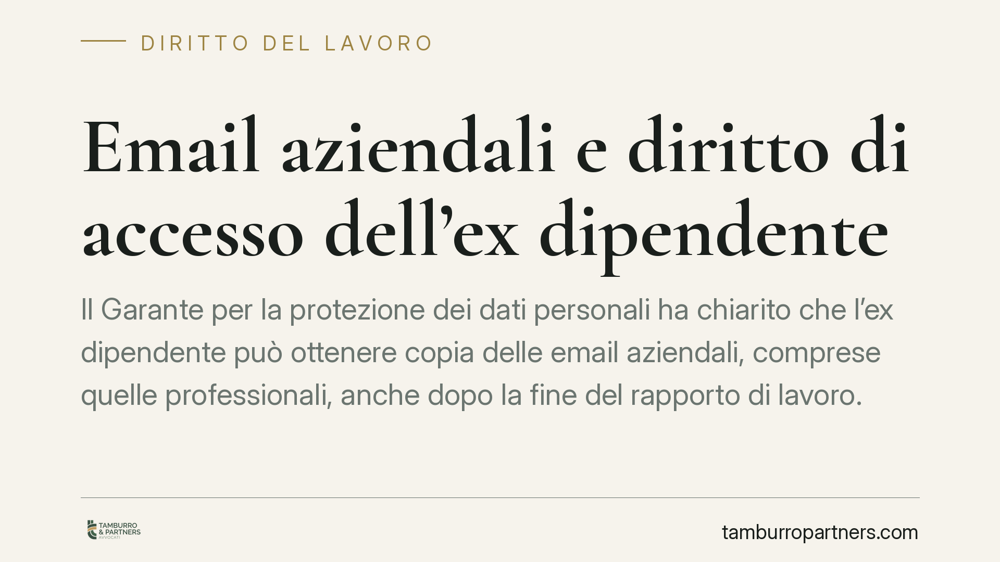

Email aziendali e diritto di accesso dell'ex dipendente
Il Garante per la protezione dei dati personali ha chiarito che l'ex dipendente può ottenere copia delle email aziendali, comprese quelle professionali, anche dopo la fine del rapporto di lavoro. La base è l'articolo 15 del GDPR. Per le imprese è un tema concreto: policy di gestione della posta e tempi di conservazione vanno rivisti per evitare contestazioni.

Il caso
Un lavoratore, cessato il rapporto, chiede all'ex datore copia delle email transitate sul proprio account aziendale. L'azienda oppone che si tratta di corrispondenza professionale, riferita all'attività d'impresa e non alla persona. Il Garante per la protezione dei dati personali ha respinto questa impostazione: quelle email contengono dati personali del richiedente e, come tali, ricadono nel diritto di accesso.
Il principio è netto. La natura "professionale" del contenuto non esclude la presenza di dati personali riferibili all'interessato. Anzi, l'account nominativo (nome.cognome@azienda) è di per sé un dato personale.
Inquadramento normativo
Il riferimento è l'articolo 15 del Regolamento UE n. 2016/679 (GDPR). La norma riconosce a ogni interessato il diritto di ottenere conferma che sia in corso un trattamento dei propri dati e, in caso positivo, di accedervi e di riceverne copia.
Il diritto di accesso non si estingue con la cessazione del rapporto di lavoro. Finché l'azienda conserva l'account o le email, essa resta titolare di un trattamento e deve dar seguito alla richiesta nei termini di legge (di regola un mese, prorogabile).
Esistono limiti. L'articolo 15, paragrafo 4, del GDPR precisa che il diritto a ottenere copia non deve ledere i diritti e le libertà altrui. In concreto, l'azienda può e deve oscurare i dati personali di terzi (colleghi, clienti, fornitori) presenti nei messaggi. Può inoltre bilanciare l'accesso con esigenze di tutela di segreti industriali o commerciali, ma non può usarli come pretesto per un rifiuto totale.
Perché conta
La gestione della posta aziendale dopo il licenziamento o le dimissioni è spesso improvvisata. Molte imprese mantengono attivo l'account per mesi, con reindirizzamento automatico verso un altro indirizzo. Questa prassi ha due profili critici.
Sul piano privacy, conservare senza criterio la posta di un ex dipendente espone a richieste di accesso e a sanzioni. Sul piano penale, l'accesso indiscriminato dell'azienda alla casella di un ex lavoratore può integrare condotte rilevanti, dall'accesso abusivo a sistema informatico (art. 615-ter c.p.) alla violazione di corrispondenza, se emergono comunicazioni a carattere personale.
Specularmente, l'ex dipendente ha uno strumento utile per ricostruire la propria attività, ad esempio in un contenzioso di lavoro sul demansionamento o sui compensi. La copia delle email può diventare fonte di prova.
Implicazioni per l'azienda
Una richiesta di accesso non gestita, o gestita con un diniego generico, è la principale fonte di reclamo al Garante. Il rifiuto va sempre motivato e ancorato a una previsione normativa, non a una valutazione di opportunità.
È opportuno distinguere fin dall'assunzione tra account nominativi e account funzionali (info@, ordini@). Questi ultimi riducono il rischio, perché non riferibili a una singola persona.
Cosa fare in concreto
Per le aziende:
- Adottate una policy scritta sulla gestione della posta elettronica, con tempi certi di disattivazione dell'account dopo la cessazione (di norma pochi giorni, con messaggio automatico di cortesia per un periodo limitato).
- Informate il dipendente, già al momento dell'assunzione, sulle modalità di trattamento e conservazione della posta e sulla sorte dell'account alla fine del rapporto.
- Predisponete una procedura interna per rispondere alle richieste di accesso entro un mese, con oscuramento dei dati di terzi.
- Non accedete al contenuto della casella dell'ex dipendente al di fuori di finalità legittime, documentate e proporzionate.
Per il lavoratore:
- Formulate la richiesta per iscritto, richiamando l'articolo 15 del GDPR, e conservate prova dell'invio e della data.
Conclusione operativa
La decisione del Garante non introduce un obbligo nuovo, ma ricorda che il diritto di accesso segue i dati, non il rapporto di lavoro. Consigliamo alle imprese di rivedere le policy prima di ricevere la prima richiesta: intervenire a contenzioso già aperto è più oneroso e più esposto a sanzioni.
---
*Contributo informativo a cura di Tamburro & Partners - Avv. Giuseppe Tamburro. Non costituisce parere legale.*
Ogni storia di lavoro ha i suoi tempi.
Se gestisci HR e vuoi un confronto su contenzioso, ispezioni o licenziamenti, scrivi allo studio. Ti rispondiamo entro un giorno lavorativo.